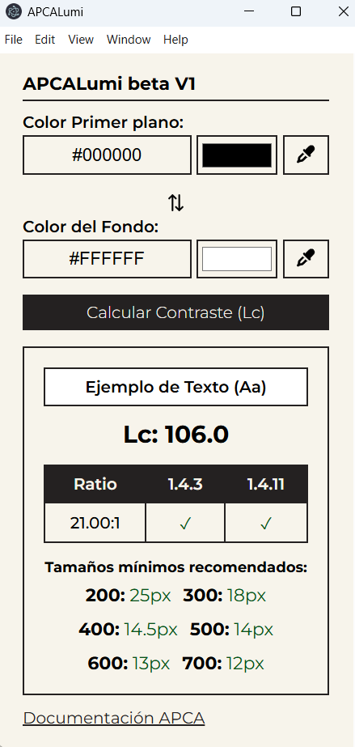

ApcaLumi - Aplicación Dual de contraste.
Access the English version
Comentarios:
La aplicación solo está disponible para Windows actualmente (versión Beta).

Optimice y valide la legibilidad de sus interfaces digitales mediante un análisis dual de color basado en estándares vigentes y futuros. El funcionamiento es directo:
- Selección de color: Utilice el gotero para capturar el color de texto (foreground) y el color de fondo (background).
- Cálculo de Relación de Contraste (WCAG 2.2): Evalúa la diferencia de luminancia relativa aplicando la fórmula matemática de los
Criterios de Conformidad 1.4.3 (Contraste mínimo, Nivel AA) y 1.4.6 (Contraste mejorado, Nivel AAA). Determina con precisión si se alcanza el ratio
requerido de 4.5:1 (o 3:1 para texto grande) en AA, o de 7:1 (o 4.5:1 para texto grande) en AAA.
- Predicción Avanzada (Algoritmo APCA): Procesa los valores bajo el Advanced Perceptual Contrast Algorithm (APCA).
A diferencia de la luminancia lineal tradicional, APCA pondera la percepción visual humana, el contexto espacial y la dirección del contraste (texto claro sobre fondo oscuro o viceversa).
- Recomendación de Escala: La aplicación devuelve una matriz de cumplimiento que indica el tamaño de fuente mínimo en píxeles (px)
y el peso tipográfico (weight) necesarios para garantizar una correcta legibilidad perceptiva.
Actualización:
- Sin actualizaciones actualmente.
Descargar app
Nota: En esta versión Beta pueden existir mensajes de alerta. La aplicación no rastrea ni guarda datos de la persona usuaria ni del equipo.
Instalarlo es responsabilidad de las personas usuarias. El archivo de instalación se generó mediante Electron y está alojado en una web personal sin fines lucrativos.
Más información: APCA Documentación oficial
Enlace a otros marcadores del autor:
Contacto para Comentarios y Errores:
Si tienes comentarios, recomendaciones o encuentras algún error, por favor, no dudes en contactarme a través de: emilianomontani@gmail.com
¡Espero que esta herramienta te sea útil en tu trabajo diario! Muchas gracias por tu colaboración :)